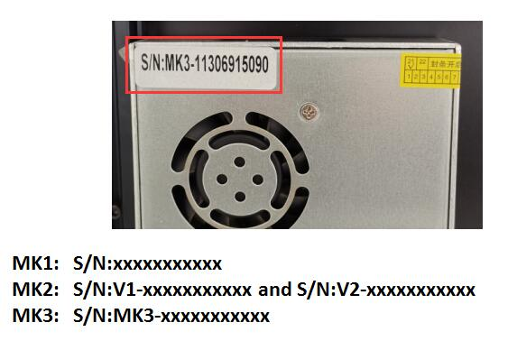

How to distinguish Z9V5- MK1/MK2/MK3/MK4
You can distinguish MK1 / MK2 / MK3 by product serial number. There is a white sticker on the power supply, which indicates the product serial number.

Z9V5-MK4 mainly improves than Z9V5-MK3:
- Use 4-IN-1-OUT Non-mixing color hotend as default hotend.
- Use magnetic hot bed sticker to replace hot bed glass.
- Bed leveling sensor used PL-08N.
- Optimized structure on top assembly, filament run out sensor etc..
Z9V5-MK3 mainly improves than Z9V5-MK2:
- Upgraded bed leveling sensor to ZLSensor, to replace the PL-08N bed leveling sensor. ZLSensor can probing the glass directly.
- Upgraded the extruder motor drivers to TMC2225(from A4988). So Z9V5-MK3's firmware is different with Z9V5-MK1 and Z9V5-MK2.
Z9V5-MK2 mainly improves than Z9V5-MK1:
- Hot end interface When shipping, the print head (hotend assembly) is separated from the backplane. There are 5 connectors behind the backplane, which can connect the wiring of the hot end without opening the control box. It will help switch between different types of hotends quickly.
- Improved the M4 hotend from the 2nd version (M4-V2) to the 3rd version(M4-V3). More details of the M4 hotend, please refer to Here.
- Improved the backlight of ZONESTAR LOGO.
- Improved the cover case of control box to make it easier to open.
- improved the belt transmission device to prevent the belt from scratching the idler pulley.
- improved the filament run out installation to make it solve the problem that may lead to the winding of filament.
NOTE
Due to the shortage of chips, a small numbers of Z9V5-MK2 used ZM3E4V1 control board. Please check the product serial number (a white lable pasted on the power supply). If the product with serial number V1xxxxxxxx , it means your machine used a ZM3E4V1 control board. Basically ZM3E4V1 has the same features with ZM3E4V2.
The first version Z9V5.
What's different between Z9V5 with Z9V5Pro
- Z9V5 used 128x64 dots LCD screen (LCD12864) and a PC hotbed film.
- Z9V5Pro used used a 4.3" TFT-LCD screen (LCD-DWIN) and glass print platform.
- We stop to produce Z9V5 since Z9V5-MK2.
How to downlod file from Github page
Step 2: Copy the Github file or direcotry link which you want to download.
{kind=link}